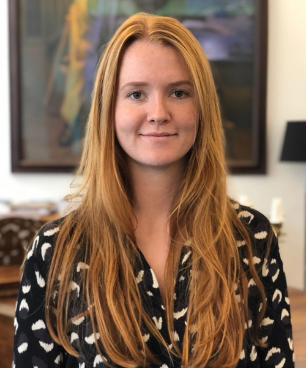

Om stifteren
Hvem står bag Orbi?

Jeg hedder Anna Villebro Rasmussen, er civilingeniør og arbejder på Orbi på fuld tid fra Danmark.
Du bør vide, hvem der står bag den app, du skriver dine beskeder i.
Hvorfor jeg byggede Orbi
Jeg var træt af at være afhængig af Facebook for at holde styr på det, jeg laver med mine venner. Grupperne og begivenhederne var grunden til, at jeg blev hængende — det var dér, aftalerne blev lavet, invitationerne kom, og fællesskaberne holdt til. Jeg savnede et alternativ, hvor jeg kunne beholde alt det praktiske uden også at skulle tage reklamerne og det algoritmiske feed med.
For mig manglede der et sted, hvor man kunne snakke sammen og planlægge noget uden at ende med at scrolle. Hvem kommer på lørdag? Hvem har fødselsdag i morgen? Hvor var det nu, vi skulle mødes? Det var de ting, jeg havde brug for, og som alt for ofte forsvandt i støjen.
Derfor byggede jeg Orbi: et alternativ til det, jeg selv brugte Facebook til. Et sted til beskeder, begivenheder og fødselsdage, hvor det handler om de mennesker, man faktisk kender. Ingen reklamer eller sporing, intet algoritmisk feed og ingen fremmede i indbakken.
Jeg ville samtidig bygge et europæisk alternativ. Et kommunikationsværktøj, der er lavet her, med respekt for privatlivet, og som står til ansvar over for dem, der bruger det. Det skulle være muligt at vælge Big Tech fra og stadig være en del af fællesskabet.
Hvad jeg lavede før
Jeg er civilingeniør i Design og Innovation (cand.polyt.) fra Danmarks Tekniske Universitet med et udvekslingsår på Queen Mary University of London, og jeg har brugt mit arbejdsliv på at designe digitale produkter.
På Nationalt Genom Center arbejdede jeg som UX-designer på værktøjer, der bruges i det danske sundhedsvæsen, hvor de data, folk giver fra sig, er omtrent så personlige, som de kan blive, og hvor tillid kommer af, hvordan tingene rent faktisk fungerer, ikke af, hvad man siger om dem. Hos LEGO Group designede jeg interne produkter sammen med it-teams og produktejere og lærte, hvordan software bliver bygget og vedligeholdt, når mange mennesker er afhængige af det. Orbi trækker på begge dele: den omhu, personlige data kræver, og disciplinen i at bygge noget, der skal holde.
Skriv til mig
Hvis noget er i stykker, eller du synes, Orbi gør noget forkert, vil jeg gerne høre det: hello@orbichat.io. Er der problemer med din konto, går det hurtigere via supportsiden.